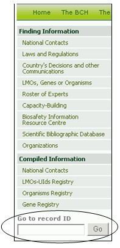

تعرض البوابة المركزية لغرفة تبادل معلومات السلامة الأحيائية آلية سريعة للبحث ليستخدمها المستعملون الذين يعرفون محدد هوية السجل للمعلومات التي يطلعون عليها. ويوجد إطار البحث ((Go to Record ID في مكان في صفحة إيجاد المعلومات في أسفل قائمة الاختيارات اليسرى.
ويستطيع المستعملون الراغبون في النفاذ إلى سجل محدد إدخال رقم السجل هنا والضغط على زرار GO لكي يتجه مباشرة إلى السجل

صورة 126
مثال: يقوم مستعمل يبحث عن محدد هوية السجل 300 بإدخال الرقم 300 في خانة GO إلى إطار بحث محدد هوية السجل ثم يضغط على الخانةGO

صورة 127